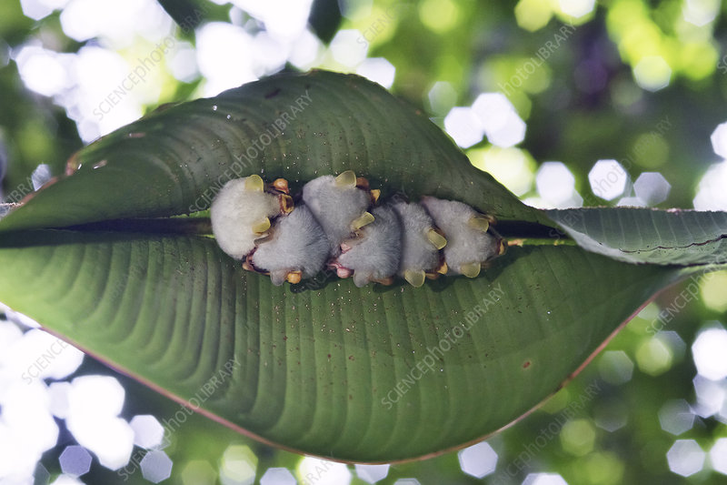
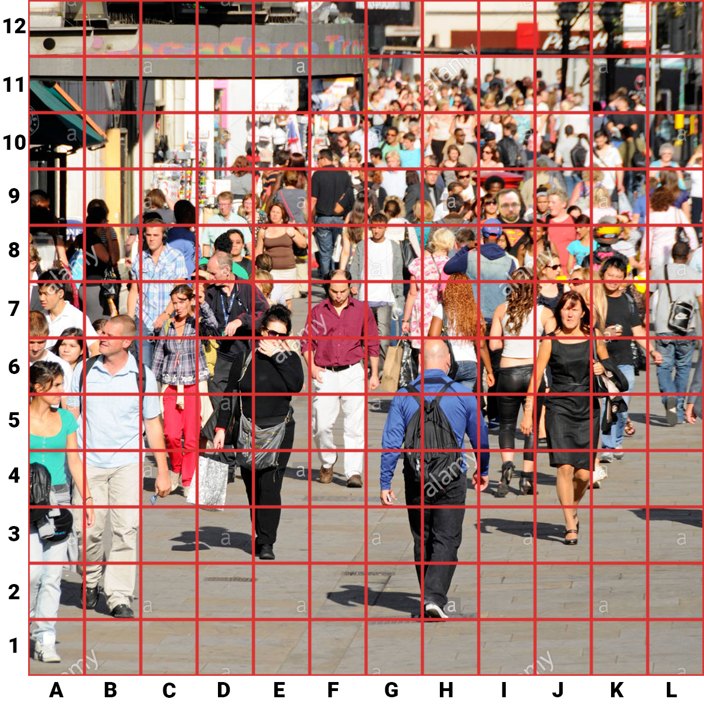
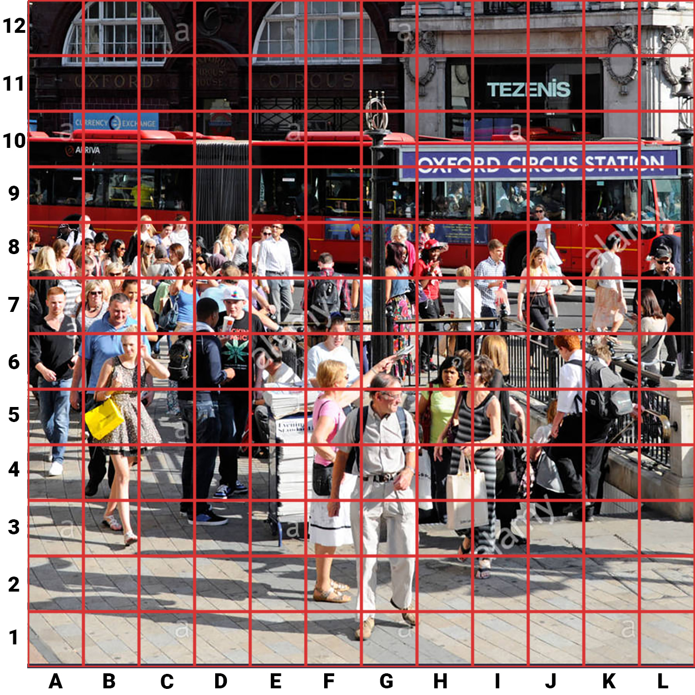

The Quiz to end all quizes
Spelling and grammar can go to hell!
So what are the topics?
- Name That Animal!
- Echo 'Hello World'
- This one’s 4kids
- Finding Mr Wright
Name That Animal
Because all animals deserve some screen time
What’s the cat?
- Scottish Highland Cat
- Norwegian Forest cat
- Pallas’s cat
- Cretan wildcat
Who let the dogs out!
- Mopitytop
- Komondor
- Asian Sheepdog
- English Sheepdog
This got Pointed quicly
- Sanava Hedgehog
- African Porcupine
- Short-beaked echidna
- Long-nosed echidna
Just Leafing it to to you
- Button Mice
- Honduran White Bats
- Honduran White Mice
- Honduran Moth Caterpillars

Coo Who
- King Buttonquail
- Queen Buttonquail
- Common Buttonquail
- Little Buttonquail
echo ‘Hello World’
That’s right, I put in some comupter based questions!
Who created the first Program?
- Konrad Zuse
- Grace Hopper
- John McCarthy
- Ada Lovelace
- Konrad Zuse
- Grace Hopper
- John McCarthy
- Ada Lovelace
The frontend of the web is created with three primary languages, which of these is not one of them?
- JavaScript
- PHP
- CSS
- Trick question, all these languages are used on the frontend!
hello World
Current computering works by On and Off signals which are represented as 1’s and 0’s known as binary. Which of these is 1025 in binary.
- 10101010101
- 10010010010
- 10000000001
- 01111111111
echo '01010100 01101000 01100101
00100000 01100001 01101110
01110011 01110111 01100101
01110010 00100000 01101001
01110011 00100000 01000011';
Computing also utilizes other numbering bases systems apart from decimil and binary. What number base does Hexadecimal use?
- 12
- 16
- 24
- 8
console.log(`54686520636f727265637420416e777365722069732042`);
A new type of computing is on the horizon, known as Quantum Computing. It can have states that are yes, no, or both. What unit are these new states stored in?
- Nubit
- qbits
- Cubyte
- Qubit
Don't Worry, this is the last question
This one’s 4kids
The 90’s and bad anime, jsut how much do you all know about!
4Kids are infamous for their dub of One Piece, but did you know a company dubbed it in english before them. Who was it?
- Sentai Filmworks
- Odex
- Viz Media
- Aniplex of America

We’ve all heard of the now informous ‘wet mouth’ voice actor from Buso Renkin, but what is her name?
- Colleen Clinkenbeard
- Laura Bailey
- Tara Platt
- Luci Christian

4Kids had a anime called Ultimate Muscle which is based on wrestleing. What is the Japanese title for this anime?
- Kinnikuman
- Hajime No Ippo
- Taigā Masuku Daburu
- Sekai de Ichiban Tsuyoku Naritai!

In Fullmetal Alchemist (manga and Brotherhood), which of these characters was still alive at the end?
- Maes Hughes
- Van Hohenheim
- Nina Tucker
- Roy Mustang

4kids were known for some pretty terrible english anime adaptions in the 90’s, which of these did they not adapt?
- Shaman King
- Mew Mew Power
- Spider Riders
- Kirby: Right Back at Ya!

Finding Mr Wright
Can you find him, and jsut how much do you know about Mr Wright
Can you find Mr wright in this picture?

I have a fair few qualifications under my belt. Which of these animal related qualifications do I not have?
- NVQ Level 1 Animal Care
- BTEC Level 3 Animal Management
- City & Guilds Level 2 Dog Grooming
- NVQ Level 4 Marine Biology

I’ve owned a number of animals as pets in my lifetime. Which of these have I not owned?
- Pigs
- Horses
- Chickens
- Koi

Which of these is my most recent photo?
A.

B.

C.

D.

Can you find Mr wright again!

Final Question: How many COmputer identified spelling mistakes were there?
Hope you were paying attenion